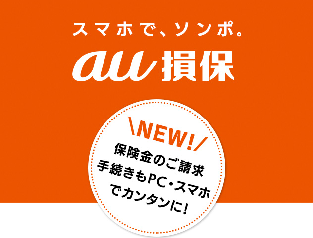

『そなえ』が『安心』につながる
「損害保険」を
もっと身近に感じてほしい。
日に日にあたらしくなる暮らしの中で、
『ピンチやトラブル』も少しずつ
カタチを変えていくから、
今のあなたに合ったサポートをしたい。
だからこそ、スマホで。
au損保が、
すべての人へお届けするのは、
モバイルの特長を活かした
スマートな安心です。
スマホで、ソンポ｡
これまでになかった損害保険を、
目指します。
｢スマホで、ソンポ｣のau損保は
半数以上の方が、スマホから新規お申込みをされています。
こんな時も、あんな時も、スマホでサッと解決。あなたのライフスタイルに合わせて、24時間365日いつでもあなたに寄り添います。
新規お申込み･ご継続手続き
スマートフォンからカンタンにお申込みできます。また、契約のご継続もお客さま専用ページでお手続きできます。
au IDを使えば、さらに便利
au IDを使うと、auにご登録のお客さま情報が自動的にセットされるので、入力する手間が省けて、カンタンにお申込みできます。
契約照会
ご契約者さまは、お客さま専用ページで、ご契約内容の確認・変更などを行うことができます。
事故のご連絡や保険金の
ご請求手続きもスマホでカンタン！
「事故のご連絡」と「保険金のご請求手続き」も、スマホでカンタンにできるようになりました！
これにより、保険金請求書のご記載、ご郵送が不要になりました。
注）「自転車向け保険」・「国内旅行の保険」・「ゴルフの保険」の「ケガの補償」(通院5日以内の場合) が対象です。
お役立ち機能満載の無料アプリで、毎日の生活をサポート
サイクリングに出かけたら、突然タイヤがパンクし走行不能に。
「自転車向け保険 Bycle」
「自転車向け保険 Bycle Best」
「自転車向け保険 Bycle S」
のご契約者さまなら、アプリ「自転車の日」で自転車ロードサービスを要請できます。
さらに、アプリで万一の事故のご連絡や保険金請求も可能です！
GPSを利用した自転車ロードサービス要請
いざという時にGPSで自分の位置を特定して、そのまま自転車ロードサービスの要請が可能！
この他にも、旅行前でも旅行中でも使える、便利で安心な機能が満載のアプリ「海外サポート」や、 愛犬・愛猫がいつまでも健康で長生きすることを応援するアプリ「ペットの家」を提供しています。
au損保は、今後も新しい保険商品・サービスや
コンテンツの提供等を通じて、
皆さまの安心で安全な生活をサポートしてまいります。